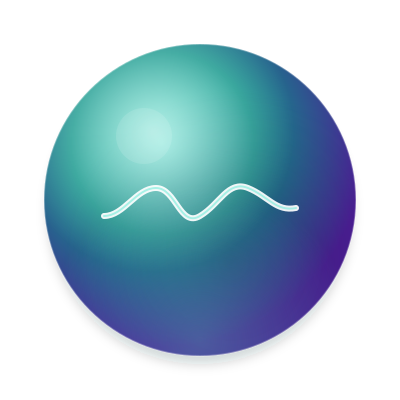

Software sob medida, do site ao SaaS.
Para prefeituras, órgãos públicos e empresas privadas que precisam de tecnologia feita para a própria operação.
Sites e landing pages
Responsivos, otimizados para SEO e para conversão, com identidade visual exclusiva.
Sistemas web e SaaS
Plataformas multi-tenant, painéis empresariais e integrações via APIs REST e GraphQL.
Consultoria em tecnologia
Auditoria de arquitetura, modernização de sistemas legados e migração para a nuvem.
contato@noxxd.com.br+55 (75) 98180-2188
Produtos reais em operação, cada um com identidade própria.
Urbis
GovTech · App + painel webZeladoria urbana para prefeituras.
HealthSearch
SST / RH · SaaSCentral de Saúde e Segurança do Trabalho que sustenta o SIGAC.

CARITAS
HealthTech · PsicologiaProntuário psicológico com anamnese, I.A. e documentos do CFP.
Um projeto por linha da grade. Comece pelo Urbis.
A cidade relata.A prefeitura resolve.
Zeladoria urbana para prefeituras: o cidadão relata com foto, áudio e geolocalização exata, e a gestão municipal decide pelo mapa de calor.
Lei 14.129/2021 · Governo Digital + LGPD
Do buraco na rua ao serviço executado.
1Categoria
Buraco na via, lixo, enchente, deslizamento: 8 categorias, configuráveis por município.
2Evidências
Até 3 fotos, nota de voz e GPS com endereço por geocodificação reversa.
3Confirmação
Relato enviado em três etapas curtas, mesmo com sinal fraco.
Alto contraste, TalkBack e VoiceOver
Centro de comando geoespacial.
Mapa de calor sobre OpenStreetMap com os pontos GPS de cada chamado aberto no município.
Pendente
Em análise
Em andamento
Resolvido
Toda mudança de status exige justificativa técnica e fica no histórico auditável da ocorrência.
Nenhum ASO vence sem aviso.
Central de Saúde e Segurança do Trabalho que sustenta o SIGAC: ciclo do ASO, matriz de treinamentos das NRs, folha e absenteísmo.
Em diaExame válido, nada a fazer
A vencerJanela de 30 dias
VencidoAção imediata
O ciclo do ASO, de ponta a ponta.
Solicitado
Agendado
Pendente
Em dia
A vencer
Vencido
30 dias
para agir antes do vencimento.
O alerta chega à equipe de SST com cor de semáforo, antes de o exame vencer.
NR-01 a NR-35na matriz de treinamentos, colaborador por colaborador.
O CID-10 é cifrado antes de sair do navegador.
No navegador · dado clínico
CID-10: F41.1
AES-GCM com chave de 256 bitsWeb Crypto API, no próprio dispositivo
No servidor · só o texto cifrado
Validação Zod em todo formulário
Rotas por perfil: assessor, SST, supervisor
Dados fictícios
CARITAS
Zelo clínico, do acolhimento ao documento.
Prontuário psicológico seguro com anamnese, resumo clínico por I.A., documentos do CFP, agenda com link público e cobrança via PIX.
Resumo clínico com I.A., julgamento humano.
Resumo clínico em 3ª pessoa
A paciente relata humor mais estável em relação às sessões anteriores. Foram revisadas as metas terapêuticas de curto prazo.
A decisão é do profissional.A I.A. sintetiza as anotações da sessão em linguagem técnica, sem substituir o julgamento clínico.
Dados fictícios